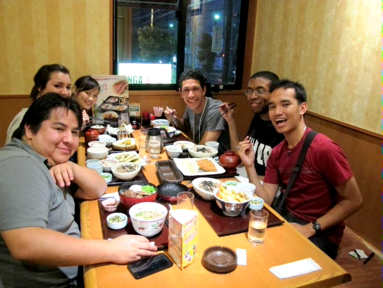

This app/design is a proof-of-concept of the idea of a social-networking look at visiting restaurants (in a manner similar to goodreads.com and reading)
Sign up/login at login
Demo login: username: floob, password: bbbbbb (6 lowercase 'b's)
Hello world!
This app/design is a proof-of-concept of the idea of a social-networking look at visiting restaurants (in a manner similar to goodreads.com and reading)
Sign up/login at login
Demo login: username: floob, password: bbbbbb (6 lowercase 'b's)